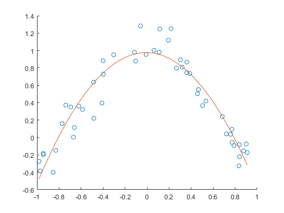
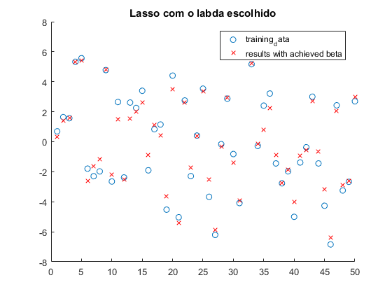
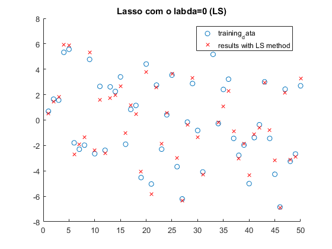

%%ramiro e Miragaia
%Pergunta 3; clear close all load data1 %a)e b) ,é pedido que a ordem 1 logo p =1 p=1; [erro,Beta] = matrizfazer(p,x,y); %os valores dos coeficientes Beta %o valore do erro erro
Beta =
0.9351
1.7332
erro =
0.7433
%pergunta 4 %a)e b) ,é pedido que a ordem 1 logo p =2 load data2 p=2; [erro,Beta] = matrizfazer(p,x,y); %os valores dos coeficientes Beta %o valore do erro erro
Beta =
0.9757
-0.0257
-1.5322
erro =
1.3416
 %pergunta 5 %a)e b) ,é pedido que a ordem 1 logo p =2 load data2a p=2; [erro,Beta] = matrizfazer(p,x,y); %os valores dos coeficientes Beta %o valore do erro erro
Beta =
1.0523
-0.0716
-1.6313
erro =
5.0249
Regurization
load data3 % for j=1:3 med = sum(X(:,j))/50; for i=1:50 X(i,j)= X(i,j) - med; end end [B,FitInfo] = lasso(X,Y); lassoPlot(B,FitInfo,'PlotType','Lambda','XScale','log');
[B,FitInfo] = lasso(X,Y,'CV',50); lassoPlot(B,FitInfo,'PlotType','CV'); FitInfo.Lambda1SE FitInfo.Index1SE beta_1 =B(1,FitInfo.Index1SE); %as seen in the graph b2 not cool man beta_2 =B(2,FitInfo.Index1SE); beta_3 =B(3,FitInfo.Index1SE); BETA = [beta_1;beta_2;beta_3] % for j=1:3 % med = sum(X(:,j)); % for i=1:50 % X(i,j)= X(i,j) - med; % end % end eixo = 1:50; Y_2= X*BETA;
ans =
0.1762
ans =
70
BETA =
2.7461
0
1.2529
%stuff figure hold on hello = sum(Y)/50; Y = Y - hello; title('Lasso com o labda escolhido'); scatter(eixo,Y); scatter(eixo,Y_2,'r','X'); legend('training_data','results with achieved beta'); erro =0; for i=1:50 erro = erro + (Y(i) - Y_2(i))^2; end % a maioria dos resultados, acho que todos não mudavam com tirar a medio dos X erro %caso regular em que o lambda é 0 beta_1 =B(1,1); %as seen in the graph b2 not cool man beta_2 =B(2,1); beta_3 =B(3,1); BETA = [beta_1;beta_2;beta_3] Y_LS= X*BETA; figure hold on title('Lasso com o labda=0 (LS)'); scatter(eixo,Y); scatter(eixo,Y_LS,'r','X'); legend('training_data','results with LS method'); erro =0; for i=1:50 erro = erro + (Y(i) - Y_LS(i))^2; end erro % %% ridge % Beta_ridge = inv(X'*X - eye(3)*FitInfo.Lambda1SE) *X'* Y Y_Lambda= X*Beta_ridge; figure hold on title('Ridge com o labda escolhido no Lasso'); scatter(eixo,Y); scatter(eixo,Y_Lambda,'r','X'); legend('training_data','results with achieved beta'); erro =0; for i=1:50 erro = erro + (Y(i) - Y_Lambda(i))^2; end erro BETA_R = ridge(Y,X,3) Y_Ridge= X*BETA_R; figure hold on title('Ridge com o beta escolhido pelo função ridge()'); scatter(eixo,Y); scatter(eixo,Y_Ridge,'r','X'); legend('training_data','results with achieved beta through ridge'); erro =0; for i=1:50 erro = erro + (Y(i) - Y_Ridge(i))^2; end erro % Y_R = X*Beta_ridge; % % figure % hold on % scatter(eixo,Y); % scatter(eixo,Y_R,'r','X'); % % erro =0; % for i=1:50 % erro = erro + (Y(i) - Y_R(i))^2; % end % % a maioria dos resultados, acho que todos não mudavam com tirar a medio dos X % erro % %% % o erro neste caso vai ser mais elevado pois o lasso elimina totalmente o % b2 logo vai fazer com que o vai permanecer que o factor linear aumentando % o erro pois o lasso é mais severo com os betas menores do que o ridge
erro =
18.5554
BETA =
2.9385
0.0645
1.4250
erro =
14.9820
Beta_ridge =
2.9493
0.0655
1.4303
erro =
14.9887
BETA_R =
2.8415
0.0550
1.4493
erro =
15.5203
  load data3 % for j=1:3 med = sum(X(:,j)); for i=1:50 X(i,j)= X(i,j) - med; end end B = ridge(X,Y,3); rigdePlot(B,FitInfo,'PlotType','Lambda','XScale','log');